Denha v9.2
Manual de Denha
Cómo usar la app, paso a paso.
01
Instala Denha en tu teléfono
Denha es una app web: no se descarga de una tienda, se instala desde el navegador y funciona sin conexión.
- iPhone: abre el enlace en Safari, toca el botón Compartir y elige «Agregar a la pantalla de inicio».
- Android: abre el enlace en Chrome, toca el menú ⋮ y elige «Instalar app» o «Agregar a la pantalla principal».
- Desde ahí se abre como cualquier app, a pantalla completa.
02
La primera vez
Unas preguntas cortas para que el contenido sea tuyo.
- Elige el idioma y escribe cómo quieres que te salude la app.
- Elige tu tradición: Cristiano, Católico, Espiritual, Budista o Una mezcla. De eso dependen tus cartas, tus rituales y lo que ves en Explorar.
- Elige qué quieres cultivar (calma, confianza, ánimo, fe, relaciones, cuerpo y descanso o propósito) y un sonido.
- Al terminar, un recorrido corto te muestra cada sección. Puedes saltarlo y verlo cuando quieras en Ajustes → Recorrido de inicio.
Consejo: Todo se puede cambiar después en Ajustes → Preferencias de contenido.
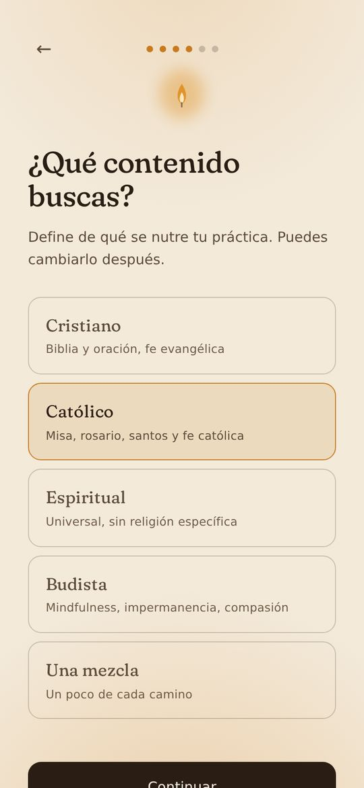
03
Hoy: tu pantalla de inicio
- La vela crece con lo que practicas. Nunca baja y no cuenta días. Tócala para verla de cerca.
- Mensaje de hoy: una frase para el día. «Compartir» la manda por tus apps; «Arma la tuya» te deja armar tu propia frase.
- Arriba a la izquierda está el sobre de tu carta; arriba a la derecha, el menú de Ajustes.
- «Hoy» y «Explorar» cambian lo que ves debajo.
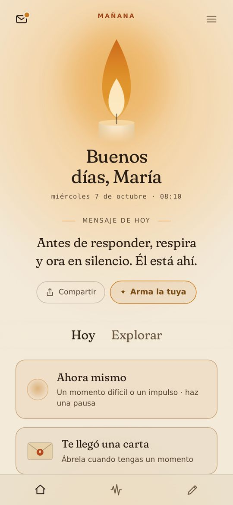
04
Tu carta del día
Cada mañana, a las 5:00, llega una carta de tu tradición, escrita para un momento concreto de la vida.
- Toca «Te llegó una carta» y luego el sello para abrir el sobre.
- Abajo de la carta: Guardar, Compartir y Escuchar (la lee en voz alta).
- Llega una al día y no se acumulan: si un día no la abres, no queda pendiente.
- En fechas especiales (Navidad, Pascua, las fiestas de tu tradición) llega la carta de ese día.
- Todas las que te han llegado quedan en Diario → Cartas.
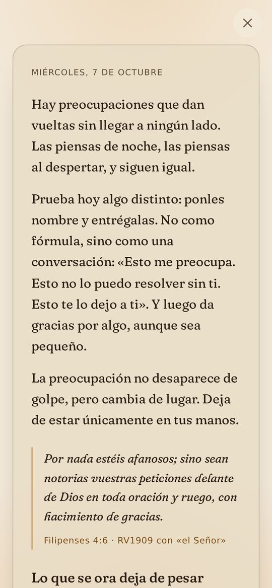
05
Carta en grupo
Para grupos de oración, de estudio o de práctica: todos reciben la misma carta cada día, con una pregunta para comentarla.
- En Diario → Cartas, toca «Crear un código para mi grupo» y compártelo.
- Quien lo recibe lo escribe en el mismo lugar y toca «Unirme».
- Cada quien lee la carta en su idioma; la carta es la misma.
- Con «Salir del grupo» vuelves a tu carta personal.
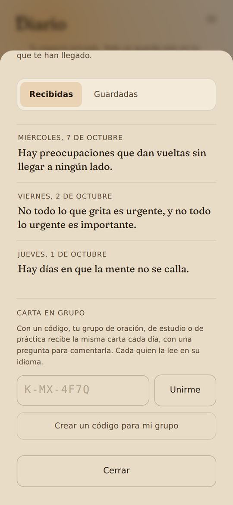
06
Tu paso de hoy
Una acción pequeña al día, en una nota debajo de tu carta. Llega cuando abres la carta, o a mediodía.
- «La hago» la aparta para hoy; «Otra» te da una distinta; «Hoy no» la quita, sin culpa.
- Cuando la termines, toca «Hecho» y, si quieres, anota qué notaste.
- Lo que no se hizo se va a las 5:00. No hay rachas ni pendientes.
- Los pasos que diste quedan en Diario → Pasos. Puedes apagarlos en Ajustes.
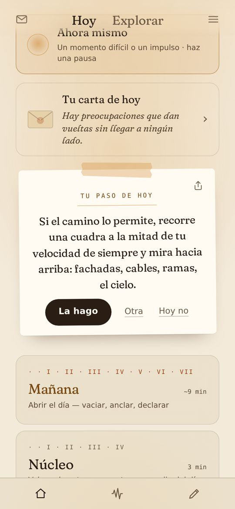
07
Tus rituales: Mañana, Núcleo y Noche
Mañana (unos 9 minutos) abre el día; Núcleo (3 minutos) te regresa al centro a media jornada; Noche (unos 6 minutos) suelta el día.
- Toca un ritual en Hoy. Elige qué necesitas (Lo de siempre, Calma, Ánimo, Fuerza o Fe) y toca la vela para comenzar.
- Cada frase aparece palabra por palabra. Si es larga, sube sola para que la lectura siga a media pantalla.
- Abajo: Voz (lectura en voz alta), Ambiente (sonido de fondo), velocidad, ← → para regresar o adelantar, y Pausar.
- Debajo de cada frase: «me sirve», «repetir» (la vuelve a leer desde el principio), «Otra» (la cambia por otra del mismo momento y sigues; también puedes deslizarla hacia la izquierda) y «no es para mí» (la cambia y ya no vuelve a aparecer).
- Si cambias una frase con «Otra», tu ritual la recuerda para la próxima vez. Para escoger cada frase a tu gusto, usa «Personalizar mis rituales». Al final puedes escribir lo que te llevas.
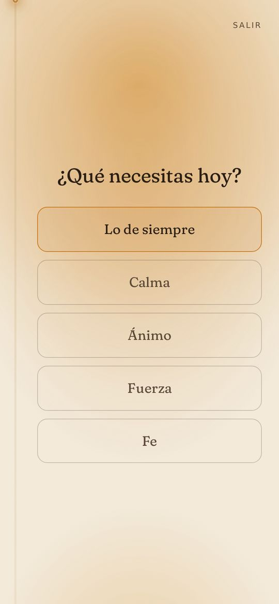
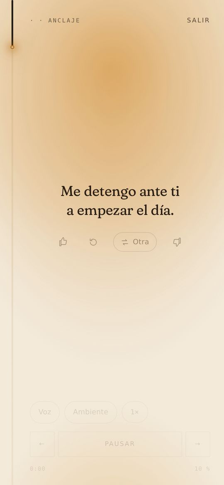
08
Ahora mismo
Para un momento difícil o un impulso: una pausa guiada, cuando la necesites.
- Elige qué buscas: centrarte, calmarte o «no me siento bien».
- Marca qué tan fuerte es y respira con la guía.
- Al final ves cómo estabas y cómo estás, y una sugerencia para los siguientes minutos.
- Si es demasiado, ahí mismo aparecen líneas de ayuda de tu país.
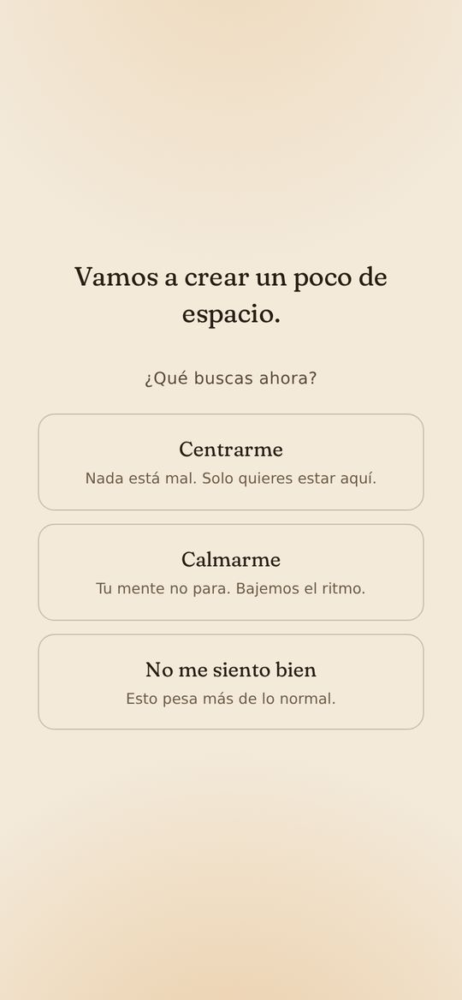
09
Explorar
- Afirmaciones: frases por tema. Guarda tus favoritas o escribe las tuyas.
- Manifestación (369): solo en los perfiles Espiritual y Una mezcla.
- Meditación: meditaciones guiadas con audio, cuando las hay en tu idioma.
- Rosario: en la ruta católica (ver abajo).
- Historias y Ancla: relatos para leer y frases y salmos para volver a la calma.
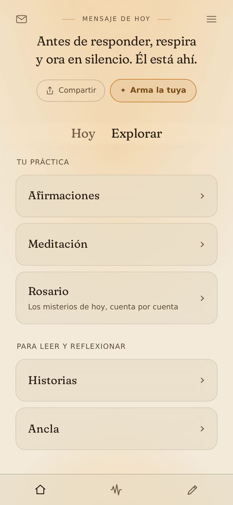
10
Rosario
En la ruta católica. Abre con los misterios del día: gozosos, dolorosos, gloriosos o luminosos. Puedes elegir otros arriba.
- Toca la tarjeta para pasar a la siguiente cuenta: señal de la cruz, Credo, Padre nuestro, tres Ave Marías, Gloria y los cinco misterios con su decena.
- Cada misterio muestra su pasaje del Evangelio.
- Solo aparece el inicio de cada oración: la rezas completa, a tu ritmo.
- No guarda registro ni cuenta días.
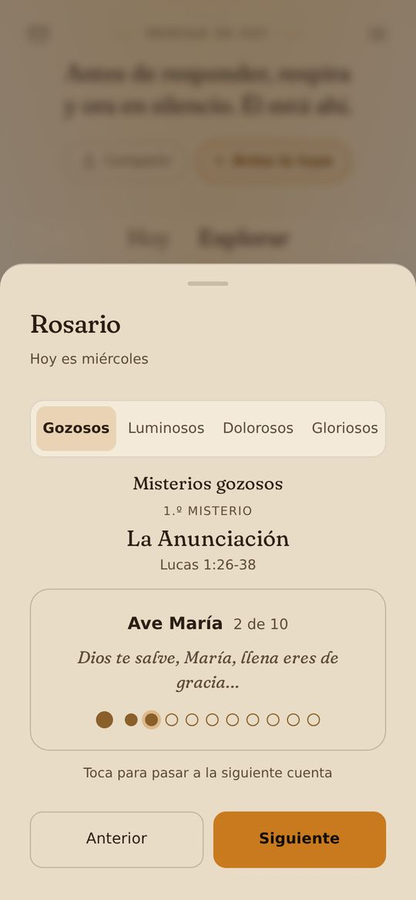
11
Sonido
- Sonidos generados en vivo, ordenados por intención: abrir el día, volver al centro, enfocarte y dormir.
- Elige la duración. Los que dicen «con audífonos» se oyen mejor así.
- En esta sección también están la concentración por bloques (pomodoro) y el temporizador con alarma.
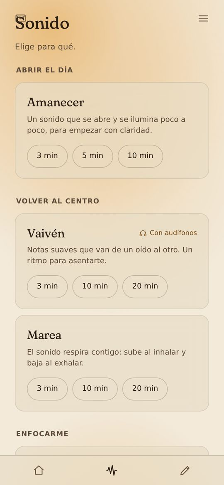
12
Diario
Tu espacio privado. Todo se guarda solo en tu teléfono.
- Escritura libre: una página tuya, sin reglas.
- Cartas y Pasos: lo que te ha llegado y lo que hiciste.
- Lo bueno: lo que agradeciste y lo que salió bien.
- Arquitecto: check-in diario, semanal y mensual.
- Propósito: tres líneas (Ser · Hacer · Cultivar) que aparecen en tu ritual de Mañana.
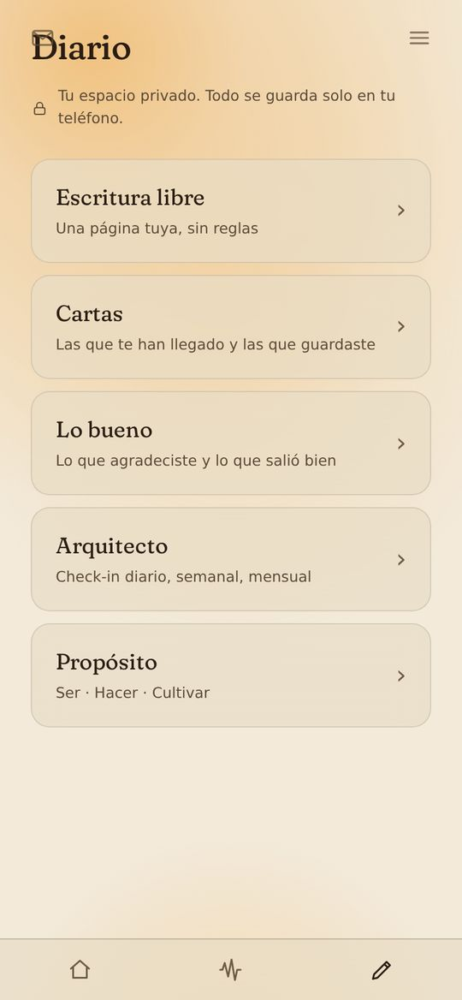
13
Ajustes
- Tu nombre y el idioma de toda la app. En inglés eliges la Biblia: Berean Standard o King James.
- Personalizar rituales, Mi contenido (tus frases, historias, reflexiones y salmos), Tu paso de hoy y Preferencias de contenido (tradición y temas).
- Tema (Auto, Claro, Oscuro o Sistema), voz y velocidad de lectura, y sonido de fondo.
- Recordatorios: agrégalos a tu calendario para que lleguen aunque la app esté cerrada.
- Respaldo: «Exportar datos» guarda un archivo con todo; «Importar datos» lo recupera en otro teléfono.
- Aquí están el Recorrido de inicio y este manual, en línea o en PDF.
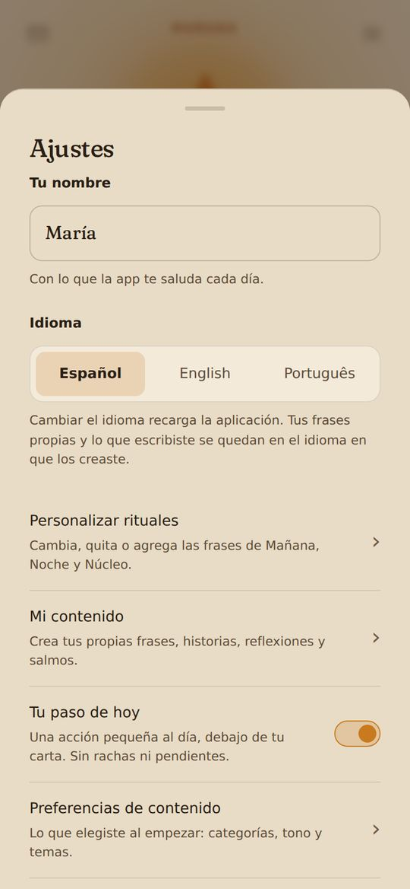
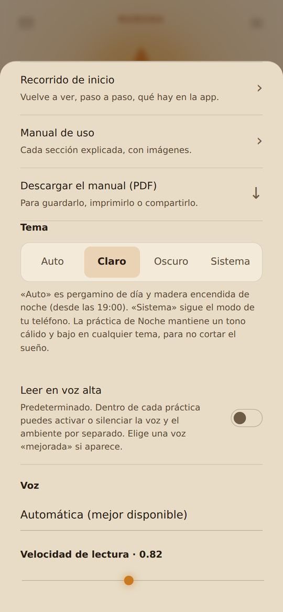
14
Privacidad y ayuda
- Tus datos se quedan en tu teléfono. Denha no pide cuenta y no envía lo que escribes a ningún servidor.
- Si borras la app o los datos del navegador, eso se pierde: haz un respaldo de vez en cuando.
- Denha es una herramienta de bienestar contemplativo. No sustituye atención médica, psicológica ni de crisis. En Ajustes → Líneas de ayuda y en «Ahora mismo» encuentras teléfonos de ayuda.
- Textos bíblicos: Reina-Valera 1909, Berean Standard Bible, King James Version y Almeida 1911, de dominio público.